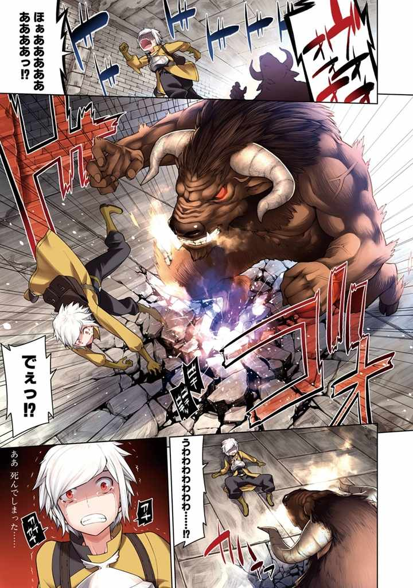
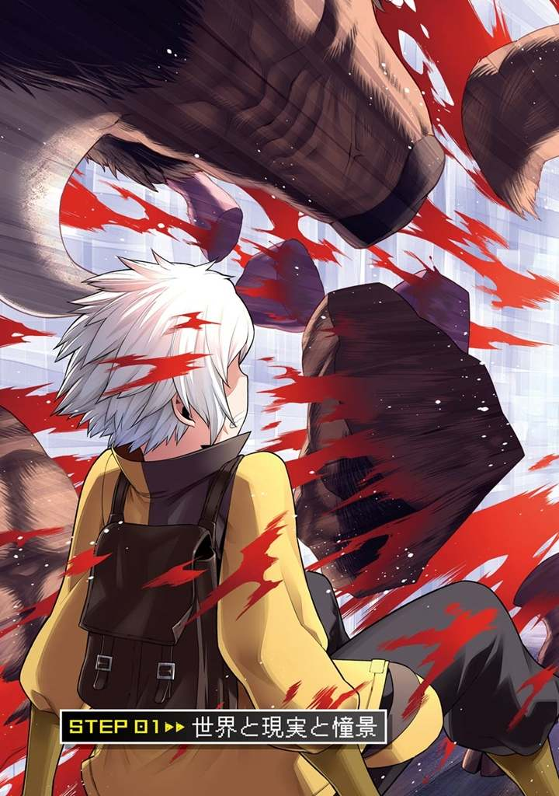
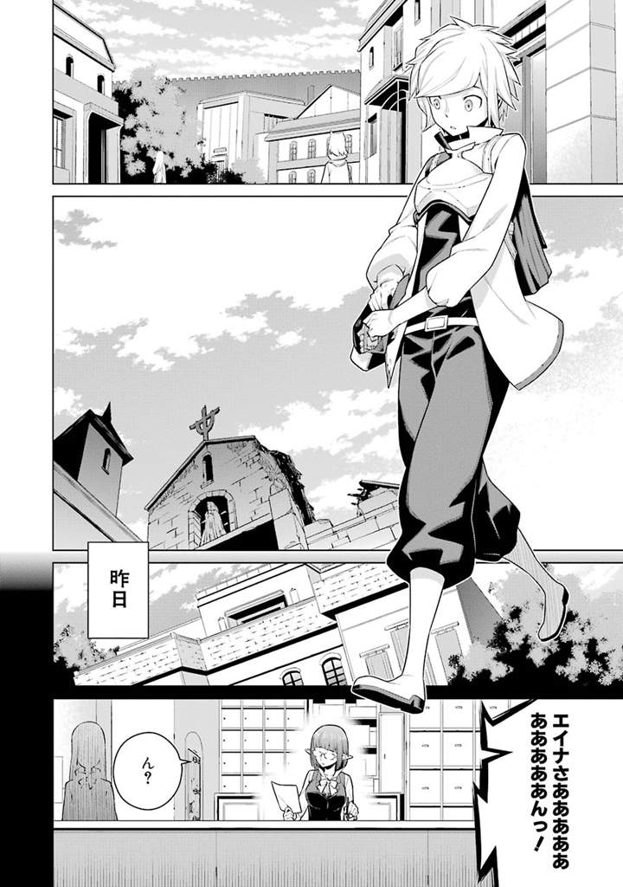
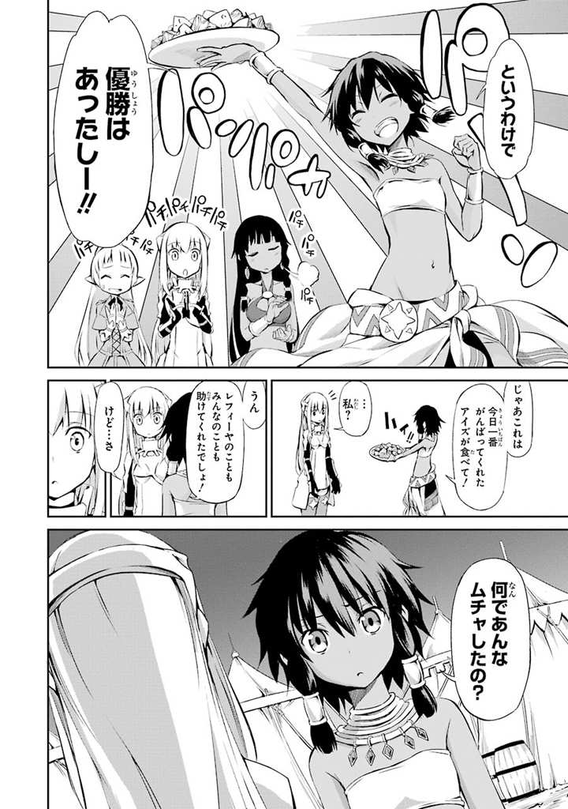

| 『ダンジョンに出会いを求めるのは間違っているだろうか』ラノベ＆コミック コラボ試読版 | |
| 大森 藤ノ & 九二枝 & 矢樹 貴 | |
| (2015) | |






本書に掲載されているコンテンツの著作権等の知的財産権およびその他すべての権利は、ＳＢクリエイティブ株式会社または正当な権利を有する第三者に帰属します。
本書の内容を権利者の許諾なく複製・複写・翻案・放送・出版・データ配信（送信可能化を含む）などすることはできません。
イラスト・デザイン
ヤスダスズヒト
ダンジョンに出会いを求めるのは間違っているだろうか？
数多 の階層に分かれる無限の迷宮 。凶悪なモンスターの坩堝 。
富と名声を求め自分も命知らずの冒険者達に仲間入り。ギルドに名前を登録していざ出陣。
手に持つ剣一本でのし上がり、末に到来するのはモンスターに襲 われる美少女との出会い。
響き渡る悲鳴、怪物の汚い咆哮 、間一髪 で飛び込み翻 る鋭い剣の音。
怪物は倒れ、残るのは地面に座り込む可愛 い女の子と、クールにたたずむ格好の良い自分。
ほんのりと染まる頬 、自分の姿を映す潤 んだ綺麗 な瞳 、芽吹 く淡 い恋心。
時には酒場の可愛い店員にその日の冒険を語り、仲を育 んでみたり。
時には野蛮な同業者からエルフの少女の身を守ってみたり。
時には伸び悩むアマゾネスの戦士を慰 め手を貸し、パーティを組んでみたり。
時には他の女の子と仲睦 まじい様を目撃され、嫉妬 されてみたり。
時には時には時には時には......。
子供からちょっと成長して、英雄の冒険譚 に憧れる男が考えそうなこと。
可愛い女の子と仲良くしたい。綺麗な異種族の女性と交流したい。
少し邪 までいかにも青臭い考えを抱くのは、やっぱり若い雄 なりの性 なんじゃないだろうか。
ダンジョンに出会いを、訂正、ハーレムを求めるのは間違っているだろうか？
結論。
僕が間違っていた。
『ヴヴォオオオオオオオオオオオオオオオオオオオオオオオオオッ!! 』
「ほぁああああああああああああああああああああああああああっ!? 」
少し邪までいかにも青臭い考えを抱いて冒険者になった結果、僕は今、死にかけている。
具体的には牛頭人体のモンスター、『ミノタウロス』に追いかけられている。
Ｌｖ．1 の僕の攻撃では一切ダメージを与えられない化物に、喰 い殺されようとしている。
詰んだ。間違いなく、詰んだ。
浅はかで卑猥 な妄想に取りつかれた僕の末路 。牛の餌 。僕の痴 れ者。
運命の出会いなんかに憧れた僕が馬鹿 だった。
一攫千金 ならぬ一攫美少女 なんて夢のまた夢だった。
日々数え切れない死者を出すダンジョンにそれを求めていた時点で、僕は終わっていたんだ。
あぁ戻りたい。いい歳 して瞳をキラキラさせながら、ギルドの冒険者登録書にサインした僕自身を殴り飛ばすために、あの時へ戻りたい。
物理的にも僕の命運的にも、それはもはや不可能なんだけど。
『ヴゥムゥンッ!! 』
「でえっ!? 」
ミノタウロスの蹄 。
背後からの一撃は体を捉 えることこそしなかったものの、土の地面を砕 き、ちょうど僕の足場も巻き込んだ。
足をとられ、ごろごろとダンジョンの床を転がる。
『フゥー、フゥーッ......！』
「うわわわわわわわわわわっ......!? 」
臀部 を床に落とした態勢で、みじめに後ずさりした。
可愛い女の子達が見たら一瞬で幻滅 しそうな光景。僕には最初から、お伽噺 に出てくるような英雄になる資格はなかったらしい。
ドンッと背中が壁にぶつかる。行き止まりだ。
何十もの通路を抜けて、辿 り着いた広いフロア。正方形の空間の隅に僕は追い込まれた。
（あぁ、死んでしまった......）
カチカチと歯を鳴らし涙をえんえん。
ミノタウロスの荒く臭い鼻息が僕の肌を殴る。
自分よりも一回りも二回りも大きい筋骨隆々 の体を見上げ、壊れたように不細工な笑みを浮かべた。
──結局、女の子との出会いは訪れなかった。
自分を死に追いやった考えをしょうこりもなく思い浮かべながら、僕の目は蹄を振りかぶるモンスターの姿を映す。
次の瞬間、その怪物の胴体に一線が走った。
「え？」
『ヴぉ？』
僕とミノタウロスの間抜けな声。
走り抜けた線は胴だけにとどまらず、厚い胸部、蹄を振りかぶった上腕、大腿部 、下肢 、肩口、そして首と連続して刻み込まれる。
銀の光が最後だけ見えた。
やがて、僕では傷一つ付けられなかったモンスターが、ただの肉塊になり下がる。
『グブゥ!? ヴゥ、ヴゥモオオオオオオオオオオォォォオォ──!? 』
断末魔 が響き渡る。
刻 まれた線に沿ってミノタウロスの体のパーツがずれ落ちていき、血飛沫 、赤黒い液体を噴出して一気に崩れ落ちた。
大量の血のシャワーを全身に浴びて、僕は呆然 と時を止 める。
「......大丈夫ですか？」
牛の怪物に代わって現れたのは、女神様と見紛 うような、少女だった。
蒼 色の軽装に包まれた細身の体。
鎧 から伸びるしなやかな肢体 は眩 しいくらい美しい。
繊細 な体のパーツの中で自己主張する胸のふくらみを押さえ込む、エンブレム入りの銀の胸当てと、同じ色の紋章 の手甲 、サーベル。地に向けられた剣の先端からは血が滴 っている。
腰まで真 っ直 ぐ伸びる金髪は、いかなる黄金財宝にも負けない輝きを湛 えていて。
女性から見ても華奢 な体の上に、いたいけな女の子のような童顔がちょこんと乗っている。
僕を見下ろす瞳の色は、金色。
（......ぁ）
──蒼い装備に身を包んだ、金眼金髪の女剣士。
Ｌｖ．1 で駆け出しの冒険者である僕でも、目の前の人物が誰 だかわかってしまった。
【ロキ・ファミリア】に所属する第一級冒険者。
ヒューマン、いや異種族間の女性の中でも最強の一角と謳 われるＬｖ．5 。
【剣姫 】アイズ・ヴァレンシュタイン。
「あの......大丈夫、ですか？」
大丈夫じゃない。
全然大丈夫じゃない。
今にも爆発して砕 け散ってしまいそうなこの僕の心臓が、大丈夫なわけがない。
ほんのりと染まる頬、相手の姿を映す潤んだ瞳、芽吹く淡い......いや、盛大な恋心。
妄想は結実、配役は逆転、想いはド頂点。
僕の心はこの時に奪われた。
ダンジョンに出会いを求めるのは間違っているだろうか？
再結論。
僕は、間違えてなんかいなかった。
「エイナさぁああああああああああんっ！」
「ん？」
ダンジョンを運営管理する『ギルド』の窓口受付嬢、エイナ・チュールは片手に持った小冊子から顔を上げた。
ほっそりと尖 った耳に澄 んだ緑玉色 の瞳。セミロングのブラウンの髪は光沢に溢 れている。美しいその容姿はエルフのように完璧に冴 え渡っているわけではなく、どこか角 が取れた風貌 。細い体はギルドの制服である黒のスーツとパンツを綺麗 に着こなしていた。
仕事人然としながら親しみやすいともっぱら評判の妙齢 の彼女は、ヒューマンとエルフのハーフである。
多くの冒険者達がダンジョンにもぐっている昼下がり、受付役として暇 を持て余していたエイナは、自分の名を呼ぶ声の主をすぐに察 する。
（今日も無事だったんだ......）
既に半月前か。
瞳を盛大に輝かせながら、あの少年がギルドで手続きを行ったのは。
自分がダンジョン攻略のアドバイザーとして監督することになったその少年の歳は十四。種族はもとより老若男女も関係なくなれる冒険者であるが、その職業柄、犠牲者は絶えない。まだ年端 もいかない子供だ、わざわざ危険地帯へ赴 くのに無論いい顔はできなかった。
自分が担当しただけあってその身を案じているエイナは、少年──ベル・クラネルの安否を確認して頬 を緩 ませる。
眼鏡をかけ直し、自らも声をかけるべく声の方向に振り向くと、
「エイナさぁぁああああああああああああああああああああああああんっっ!! 」
全身をドス黒い血色に染めきった少年の姿が、視界に飛び込んできた。
「うわあああああああああああああああああ!? 」
「アイズ・ヴァレンシュタインさんの情報を教えてくださあああああああああいっ！」
「ベル君、キミねぇ、返り血を浴びたならシャワーくらい浴びてきなさいよ......」
「すいません......」
僕はエイナさんの言葉にうなだれた。
ギルド本部のロビーに設 けられた小さな一室。今、僕とエイナさんはお互い椅子 につき、テーブルを挟んで向かい合っている。
体を洗ってさっぱりした僕の前で、エイナさんはこれみよがしに溜息 をついた。
「あんな生臭くてぞっとしない格好のまま、ダンジョンから街を突っ切って来ちゃうなんて、私ちょっとキミの神経疑っちゃうなぁ」
「そ、そんなぁ」
見目 麗 しいエイナさんにそんなことを言われてしまうと冗談抜きで心が抉 られる。眦 に涙が浮かび上がってしまいそうだった。
エイナさんは苦笑して僕の鼻をちょんと指で押さえると、「今度は気をつけてね？」と微笑 んでくれた。ぶんぶんぶんっ、と僕は大げさに首を縦に振る。
「それで......アイズ・ヴァレンシュタイン氏、の情報だったっけ？ どうしてまた？」
「えっと、その......」
赤くなりながら先程あった一部始終を語った。
普段通っているダンジョンの2 階層から一気に5 階層まで下りてみたこと。
足を踏み入れた瞬間いきなりミノタウロスに遭遇 して追いかけ回されたこと。
追い詰められたところを、【剣姫 】アイズ・ヴァレンシュタインさんに救われたこと。
動揺しながらも何とかお礼を言おうとしたけれど、手を差し伸べられた瞬間頭が真っ白になり──膨 れ上がった羞恥 と緊張によって混乱をきたしてしまい──全速力で逃げてしまってきたこと。
耳を傾 けてくれていたエイナさんは、僕の話が進んでいく内に表情を険 しくしていく。
「──もぉ、どうしてキミは私の言いつけを守らないの！ ただでさえソロでダンジョンにもぐってるんだから、不用意に下層へ行っちゃあダメ！ 冒険なんかしちゃいけないっていつも口を酸っぱくして言ってるでしょう!? 」
「は、はいぃ......！」
──『冒険者は冒険しちゃいけない』──
エイナさんの口癖だ。文字だけ見ると矛盾しているように見えるけど、つまりは『常に保険をかけて安全を第一に』という意味だ。
特に僕みたいな駆け出しは肝 に銘 じておかなければいけないのだとか。冒険者に成り立ての時期が一番命を落とすケースが多いらしい。
5 階層でＬｖ．2 にカテゴライズされるミノタウロスと遭遇 するなんて誰にも予想できない。
あのモンスターは少なくとも15 階層以下の迷宮に出現するというのが一般見解だ。エイナさんに言わせれば、『ダンジョンは何が起こるかわからない』っていうことなんだろう。
......本当に、あの人がいなかったら今頃死んでいた。思い出すだけで背筋が震え、遅まきながら尿意なんかを催 してくる。
僕はエイナさんに言われたことを二度と忘れないと心に誓 った。
「はぁ......キミは何だかダンジョンに変な夢を見ているみたいだけど、今日だってそれが原因だったりするんじゃないの？」
「あ、あはははっ......」
正解。異性との出会いを求めて、ちょっと冒険をしてみたくなりました......なんて馬鹿正直に言ったら、きっと叩 かれちゃうな。
もともと、僕が冒険者になろうとしたのはまだ見ぬ美女美少女との巡り会い──それこそ英雄譚に出てくる運命の出会いのような──に憧れてという不純な動機だった。ギルドの手続きの際に僕の胡散 臭い情熱を目 の当たりにしていたエイナさんは、こちらの胸中は把握していないにしても、半ば確信しながら疑いの眼差しを向けてくる。
いやでもっ、今日からは違う。僕はそんな不純な動機を打ち捨てて、純真一途 な理由でダンジョンにもぐるんだ。
あの人に、出会ったから。
「あの、それで、ヴァレンシュタインさんのことを......」
「う～ん......ギルドとしては冒険者の情報を漏 らすのはご法度 なんだけど......」
「教えられるのは公然となっていることくらいだよ？」と前置きをしてエイナさんは語り始めた。何だかんだでこの人は親切だ、僕が駆け出しだからって理由もあるのかもしれないけど。
本名、アイズ・ヴァレンシュタイン。【ロキ・ファミリア】の中核を担 う女剣士。
剣の腕前は間違いなく冒険者の中でもトップクラス。たった一人でＬｖ．5 相当のモンスターの大群を殲滅 したこともあり、冒険者達の間でついた、もうひとつの渾名 が【剣姫】をもじった『戦姫 』。
神様達の間でもその名前は知れ渡っており、『アイズたんマジ無双』とまで称賛されているらしい。
下心を持って近寄ってくる異性は軒 並み玉砕、あるいは粉砕。
ついこの間にはとうとう千人斬りを達成......。
「え～と、あと他に何があったかなぁ。あの容姿であの強さだから、話題はつきないんだよね」
「あ、あの、冒険者としてじゃなくて......趣味とか好きな食べ物とか、後は今言った最後みたいな情報を......」
僕が顔を熱くしながらおずおず言うと、エイナさんは目を二、三度と瞬 かせた。
「なぁに、ベル君もヴァレンシュタイン氏のことを好きになっちゃったの？」
「いや、その......ぇぇ、はい......」
「あはは、まぁ、しょうがないのかな。同性の私でも彼女には思わず溜息をついちゃうし」
苦笑してエイナさんは口元に紅茶を運ぶ。動作一つ、どれをとっても雅 やかだ。
ヴァレンシュタインさんのことを誉 めるこの人も、冒険者達の中では普通に人気が高い。柔和 な線で縁取 られた宝石のような瞳に、ほっそりとした顎 、綺麗な鼻筋。美人っていう人の条件はしっかりと備えちゃってる。狙 っている人は数知れないともっぱらの噂 。僕もエイナさんに担当してもらってすっかり浮かれていた口だ。
ハーフといっても流麗で知られるエルフの容貌 を色濃く反映しているし、それでいてこんな風に意外と人懐っこく親しみやすいものだから、印象と実態の懸隔 にやられる人が多いみたい。
エイナさんはその後ちょっと考え込んで、ヴァレンシュタインさんと付き合っている人というのは耳にしたことがないと教えてくれた。
僕は思わずガッツポーズをとる。
「趣味とかそこまで踏み入った話は流石 に聞いたことがない......って、ダメダメ、これ職務にてんで関係なし！ 恋愛相談は受け付けてないって！」
「そ、そこをなんとか！」
「だーめ！ ほら、もう用がないんなら、帰った帰った！」
立ち上がり、僕を追い出すように部屋の退出を促 すエイナさん。惰弱 な抵抗も徒労に終わり、ギルド本部のロビー前に二人して出る。
白大理石で造られた立派なホールは少し閑散 としていて、壁際 に設置された冒険者や神様の彫像が存在感を放っていた。
「ああ、エイナさんのいけず......」
「あのねぇ......キミは冒険者になったんだから、もっと気にしなきゃいけないことが沢山あるんだよ？」
「うっ......」
それは、わかってる。
庇護 してくれる存在がいない今の僕は、明日を生きるためにこの体を使ってダンジョンにもぐり続けるしかない。お金の節約などにも意識を割 いておかないと大変なことになる。
養わなければいけない人......いや、『神様』もいるのだ。ヴァレンシュタインさんのことを熱心に考え込む余裕は、実際僕にはないのだろう。
「キミはもうロキ以外の神から『恩恵』を授かったんでしょう？ 【ロキ・ファミリア】で幹部も務めるヴァレンシュタイン氏にお近付きになるのは、私は難しいと思う」
「......はい」
「......想いを諦 めろなんて言いたくないけど、現実だけはしっかり見据 えておかなきゃ。じゃないと、ベル君のためにもならない」
少なくとも今は冒険者として頑張れ。言外には、そんなところだろう。
【ファミリア】の部分を引き合いに出された時は、遠回しに死刑宣告された気分だったけど。
若干 へこむ僕に困った顔をしながら、エイナさんはギルド職員として事務的な対応をした。
「換金 はしていくの？」
「......そうです、ね。一応、ミノタウロスに出くわすまでモンスターは倒していたんで」
「じゃあ、換金所まで行こう。私も付いてくから」
気を使わせてしまっているのが心苦しかった。ただでさえ、まだ右も左もわからない今の僕に良くしてもらっているというのに。これじゃあいつまで経 ってもエイナさんには頭が上がりそうにない。
それから僕達はギルド本部内にある換金所に向かい、本日の収穫を受け取った。
ゴブリンやコボルトを中心に倒して手に入れた『魔石の欠片 』。全 て合わせて一二〇〇ヴァリスほど。いつもと比べ収入が低いけど、これはヴァレンシュタインさんから逃げ出したために、普段より短い時間しかダンジョンへもぐっていなかったからだ。
うーん、武器の整備や神様と僕の分の食事を考えると、アイテムの補充はできないかな......。
「......ベル君」
「あっ、はい。何ですか？」
帰り際、出口まで見送りにきたエイナさんに引き止められる。
彼女は逡巡 する素振りを見せながら、思い切ったように口を開いた。
「あのね、女性はやっぱり強くて頼りがいのある男の人に魅力を感じるから......えっと、めげずに頑張っていれば、その、ね？」
「......」
「......ヴァレンシュタイン氏も、強くなったベル君に振り向いてくれるかもよ？」
動きを止めて、その言葉をよく咀嚼 して、上目がちに窺 ってくるエイナさんを見つめて。
ギルド職員ではなく、一人の知人として励ましてくれていることに気付いた僕は、みるみる内に笑みを咲かせた。
勢いよくその場から駆け出した後、すぐに振り返り、エイナさんに向かって叫ぶ。
「エイナさん、大好きー!! 」
「......えうっ!? 」
「ありがとぉー！」
顔を真 っ赤 にさせたエイナさんを確認して、僕は笑いながら街の雑踏 に走っていった。
迷宮都市オラリオ。
『ダンジョン』と通称される地下迷宮を保有する、いや迷宮の上に築き上げられた巨大都市。
都市、ひいてはダンジョンを管理する『ギルド』を中核にして栄 えるこの都市は、ヒューマンも含めあらゆる種族の亜人 が生活を営んでいる。
学に乏 しい僕がオラリオについて説明できるのはこのくらい。住みついといてあれだけど、本当に大雑把な認識程度だ。
ダンジョンにもぐり、そこから得た収入で生計を立てている人達をもっぱら冒険者と言って、今の僕の職業でもある。
僕はオラリオから少し離れた田舎 育ち。世間知らずと言ってもいい僕は、一年前に育ての親の祖父 が亡くなり保護者を失った後、残った財産を持って村を飛び出した。
言わずもがなダンジョンでの出会いを渇望 していたからだ。
『──男ならハーレム目指さなきゃな！』
幼い僕へ頻 りにそう言い聞かせていた祖父の清々 しい笑みを、今でも鮮明に覚えている。
物心がついた時から祖父が読み聞かせてくれた英雄譚が大好きだった。怪物を退治し、人々を救い、囚 われのお姫様を助け出す、最高に格好良い英雄達のように自分もなりたいと、当時の僕は本気でそんな夢を抱いていた。
そしてそんな時、祖父は教えてくれた。
英雄達 の物語 の中で最大の醍醐味は、可愛い女の子との出会い なのだ、と。
それからは早かった。小さかった僕は英雄に憧れる傍 ら、異性との出会いに熱意を燃やし、祖父から日夜『男の浪漫 』とは何たるかを教えてもらった。
年を重ねていくにつれ、英雄なんて偉大な存在にはなれないのだと片方の夢は萎 んでいき、その代わりに、もう片方の情熱はお前の意志は受け継いだとばかりに膨らんでいった。
祖父に度々 勧められたことですっかり愛読書 となった『迷宮神聖譚 』──この迷宮都市で業績を残した様々な英雄の物語も、そんな情熱形成の一役を買ったのかもしれない。
英雄達が繰り広げたような冒険の舞台に身を置けば......オラリオに行けば、冒険者になれば、ダンジョンにもぐれば。
英雄譚に出てくる、運命の出会いというやつに巡り会えるのではないのかと。
たった一人の家族 を失った僕は、あの人が残してくれたその一念に後押しされるように、ダンジョンのあるこの地へやって来たのだ。
来た当初は盲目的だったけど、命を危険に晒 された今になってくると、流石に馬鹿な理由で来たものだと顧 みる思考が生まれてくる。こんなふざけた考えで冒険者になったのは僕くらいなのかも。まぁ、富とか名声とか、そういったものを求めている人達と中身は変わらないような気はちょっとするんだけど。
ただ『生きる』って難しい。それが今日死にかけてよくわかった。
ダンジョンだって何だって、そう簡単に思うようにはいかないってことだ。
当初とすげ替わった目的、アイズ・ヴァレンシュタインさんのことも含めて。
様々な種族で溢れる大通りを縫 うように駆けていく。
ドワーフ、ノーム、獣人、パルゥム......市民のたたずまいをした人達もいれば物騒な装備で固められた人達もいる。ヒューマンの田舎で育った僕にとってこの街は全てが新鮮で色鮮やかだ。この人ごみの波だけでも、いくら見続けようが飽きることはなさそうだった。やかましいと思えるほどの喧騒 が妙に心を浮き立たせてくる。
すれ違った怜悧 な顔立ちのエルフに目を奪われながらも目的地を目指す。メインストリートを出ていかにもというような細い裏道を通り、いくども角を曲がる。
背中に届いていたざわめきが途絶えた頃、僕は袋小路に辿 り着いた。
「......」
目の前の建物を仰 ぐ。
人気 のない路地裏深くに建っているのは、うらぶれた教会だった。
神様を崇 めるために築かれたその二階建ての建物は崩れかけていると言っていい。ところどころ石材が砕け がれ落ちた外観からは気が遠くなるような年月と、人々の記憶から忘れ去られた哀愁 が漂 っていた。
正面玄関の真上、全身をぼろぼろにして顔半分も失ってしまっている女神様の石像が、微笑 みながら僕のことを見下ろしている。
「よっ、と」
確かめる必要はなかったけど、一応首を振ってから人影がないことを認め、僕は扉のない玄関口をくぐって教会の中に入った。
屋内は外見に負けず劣 らずの半壊模様。割れた床のタイルからは雑草が繁茂 し、頭上の天井は大部分が崩れ落ちてごっそり無くなっている。屋根に開いたその大穴から降りそそぐ暖かな日差しが、かろうじて原型を留めている祭壇 を照らしていた。
廃墟 と言われても反論できない教会内を僕は慣れた足取りで突っ切り、祭壇の先にある小部屋へと身を進める。薄暗い部屋には書物の収まってない本棚が連なっており、一番奥の棚の裏には......地下へと伸びる階段。
そこまで深さのない階段を下りきった僕は、ぼうっと小窓から光が漏れる、目の前のドアを開け放った。
「神様、帰ってきましたー！ ただいまー！」
声を張り上げて足を踏み入れると、広がるのは地下室という響きとはかけ離れた生活臭のする小部屋だった。人が暮らしていく分には、まぁそれなりの広さ。
僕が呼びかけた人は部屋に入ってすぐにある、紫色のソファーの上に寝転がっていた。仰向けの姿勢で開いた本を見上げていた彼女は、ばっと起きて立ち上がる。
外見だけ見れば幼女......と少女の境界線を揺れ動いているような感じ。僕より身長は低くて、他人には『歳 の近い妹』で十分に通用する。
幼 い顔に笑みを浮かべるその女の子は、トトトトと音を立てて僕の目の前までやって来た。
「やぁやぁお帰りー。今日はいつもより早かったね？」
「ちょっとダンジョンで死にかけちゃって......」
「おいおい、大丈夫かい？ 君に死なれたらボクはかなりショックだよ。柄 にもなく悲しんでしまうかもしれない」
小さい両手が忙 しなくパタパタと僕の体に触れて、怪我 はないか確かめてくる。
その気づかいと告 げられた言葉に僕は嬉 しくなり、頬を染めて照れてしまった。
「大丈夫です。神様を路頭に迷わせることはしませんから」
「あっ、言ったなー？ なら大船に乗ったつもりでいるから、覚悟しておいてくれよ？」
「なんか変な言い方ですね......」
二人して笑みを漏らし、部屋の奥に進んだ。
部屋の中は正方形と長方形をくっつけた、ちょうど「Ｐ」の字のような形。正方形の部分にあたる出入り口前で、置いてある二つのソファーに僕と彼女はそれぞれ座る。
正対する女の子は、紛 れもなく美少女だ。艶 のある漆黒 の髪が耳を隠すほど伸びていて、更に横からはツインテールが作られ腰まで届いている。髪を結わえているリボンには銀色の鐘。丸い顔と丸い頬は幼い容貌を形作り、そのせいもあってか、服の上からでもわかるくらい豊かに成熟している胸元にはつい目を引き寄せられてしまう。
円 らな瞳には透 き通るような青みがかかっていて、その整い過ぎた容姿の中でも幻想的な雰囲気を醸 し出していた。
将来は絶世の美女を約束されているようなものだけど、彼女が今の姿から成長することはありえない。
神様、と僕が呼んだように、この人は『神』だ。
ヒューマンや亜人 、ダンジョンに出現するモンスター達とも異なる、一つ次元が違った超越存在 。僕達のように歳はとらないし姿も変わらない。人知を超えてしまっていて、僕の憧れる英雄達よりスゴイ御方 。
「それじゃあ、今日の君の稼ぎはあまり見込めないのかな？」
「いつもよりは少ないですね。神様の方は？」
「ふっふーんっ、これを見るんだ！ デデン！」
「そ、それは!? 」
「露店の売上げに貢献したということで、大量のジャガ丸くんを頂戴 したんだ！ 夕飯はパーティーだ！ ふふっ、ベル君、今夜は君を寝かせないぜ？」
「神様すごい！」
そんなスゴイ御方は、ヒューマンのお店で普通にアルバイトをしてしまっているわけだけど。
勿論 、お金を稼いで明日を生き抜くためだ。
──遠い昔、『神様達』は僕達が暮らすこの世界......彼等 からすると『下界』にあたるこの地へと降り立った。お伽噺 とか一杯あるけど、目の前の神様の言葉だと要は、「天界は退屈で仕方がなかった」らしい。
僕達が一般的に思い浮かべるような楽園、『天界』にて、無限の時をダラダラと過ごす毎日に飽き飽きしてしまった沢山の神様達は、様々な無駄を拵 えながら文化や営みを育む『子供達』──下界に住む僕達のことだ──に娯楽 を見出 したという。
『子供達と同じ地位かつ同じ能力で、彼等の視点に立つ』
完璧の存在であるが故に不完全、無駄だらけの僕等とこの世界に興味を持ったのだ。
結果的に下界は神様達を大いに興奮させた。全く思うようにいかない事象、食事や趣味や芸術等で満たされる欲求、親交という名の不特定多数の繋 がり。
笑えた、らしい。
神様達にはまるでゲームでもやっているような感覚らしいけれど、予断を許さないこの一時が楽しくて楽しくて仕方がないのだと。
ほどなくして神様達はこの下界に住みついた。多くの神様達が永住することを決めたらしい。
下界の先住者である僕達のご先祖様はそれを拒 める筈 もなく、いやむしろ『恩恵』を授 けてくれる存在として神様達を重宝 したそうだ。言い方はあれだけど、利用して利用される関係？ 現代の仕組みはその関係が如実 に表れている。
子供達の中に紛れて、僕達が互いにそうするように日々を助け合い、生きていく。
不自由とは無縁の生活を捨てて、神様達は不便極まるこの世界にのめり込んでいったのだ。
「いやぁ、それにしても......マスコットキャラとして道行く人はみんな可愛がってくれるけど、ボクの【ファミリア】に加わりたいという子は相も変わらず皆無だよ。全く、ボクの名のヘスティアが無名だからって、みんな現金だよねえ」
「うーん、どの【ファミリア】も授かる『恩恵』は一緒なんですけどね......」
目の前の神様の名前は『ヘスティア』。僕達と同じように神様達にも呼称が決まっているらしい。
【神の眷族 】とはつまり、その神様による派閥。【ロキ・ファミリア】だったら【神ロキの眷族 】という意味で、【ヘスティア・ファミリア】だったら【神ヘスティアの眷族】。ロキ派とかヘスティア派とか、～派と呼ぶ人達もいる。
【ファミリア】に加わるということは、僕の感覚から言っちゃえば、神様の家族になるということと同じだと思う。
神様達も下界で僕達と同じように生きていくと決めた以上──神様達の間で万能である『神の力 』を下界で使ってはいけないというルールが取り決められたらしい──、衣食住は勿論お金も必要になってくる。
働くことが好きっていう神様もいるらしいけど、やっぱり楽しいことだけを享受 したいっていう方達は断然多い。そんな神様達は自分達が好き勝手なことをするために、僕達下界の者の力を借りることにしたのだ。
【ファミリア】に加わることで下界の者は『恩恵』を授 かる。
神様はそんな彼等に色々お願いしたり、お金を稼いできてもらったりする。
つまり、身も蓋 もない言い方だけど、神様は【ファミリア】の構成員 に養ってもらうということだ。
けれど僕達にとっても『恩恵』のご利益は無視できないものがあって、一度授かってしまえば、どんな人でも下等のモンスターなら撃退できるようになってしまう。
『ギブアンドテイク』だと、目の前のヘスティア様はそんなことを言っていた。
「はぁ、ベル君一人に負担をかけるのは、ボクとしては心苦しいんだけど......」
「僕は別に......それに神様だって働いてくれているじゃないですか」
多くの構成員を抱える大きな【ファミリア】があれば、当然、僕達のようないわゆる矮小 な【ファミリア】もある。
こうなってくると神様も四の五の言ってられなくて......このヘスティア様のように働かなければいけなくなる。大好物の娯楽を み締 める暇もなく、単純に生きるために。
その気になれば何だってできるのに、あくまで下界の枠組みの中にとどまろうとする神様達に、僕は思わず笑みとともに親近感を抱いてしまう。
いやまぁ、中には【ファミリア】を操 って意のままの王国を作っちゃう──というより【ファミリア】自体を王国にする──神様もいるんだけど。......王国経営ゲーム、なのだそうだ。
しかしそれも、人の手で運営されて人の手で築き上げられていくものだから、神様達のルールには反していないらしい。神様が下界を好きなように弄 くっているなんて陰口叩く人もいるけど、それでもそれは、王族を名乗る一部の下界の者達が望んでいたことでもある。
神様は人の織 りなす出来事と経過をニヤニヤと見守っているけど、結局、彼等の力は人の促進剤としての域を出ないのだ。
「......ごめんねぇ、こんなヘッポコな神と契約させちゃって」
「か、神様ぁ......」
しゅんと小さくなる神様を見て、僕も情けない声を出してしまう。
田舎から出て冒険者になろうとしていた僕は、ちょうど【ファミリア】の構成員を探しに街を回っていたヘスティア様と出会った。
有名な【ファミリア】は人員も豊富で基本的に飽和 しているところが多い。中小規模の【ファミリア】だって頼りなさそうな田舎臭さ丸出しの輩 より、多少なりとも戦闘や専門職に心得がある人材を優先させる。多くの【ファミリア】からことごとく門前払いを受けていた僕は、神様の勧誘に一も二もなく飛びついたのだ。
どうやら神様はそれに負い目を感じているようだった。こう、世間知らずの子羊ちゃんを見事に引っかけちゃったぜ、みたいな。
ヘスティア様は比較的最近に天界から降りてきて、僕に会うまでは友人の神様の【ファミリア】でお世話になっていたと、そう教えてくれた。多くの神様達と同様に、家でゴロゴロ転がりながら大好きな下界産の本を読み耽 るという自堕落 な生活を送っていたところ、勤勉なご友人の逆鱗 に触れて追い出されたそうな。教会の地下に設けられたこの部屋は、そのご友人の神様が贈ってくださった最後のお情けらしい。
でも実際、神様達の『恩恵』の本質には差がない。これは事実。
『恩恵』を授かる誰もが、最初は同じ出発点からスタートすることになる。そこからどう発展していくかはその人次第。
結局【ファミリア】としての評判は、どんなお店もどんな国も同じように、所属する人の能力に左右されるのだ。神様が悪いだなんてことは決してない。
「大丈夫ですよ神様！ 僕達の【ファミリア】はまだ始まったばかり、言っちゃえば発展途上ってやつです！ 最初の内はそりゃ苦しいかもしれないですけど、ここを乗り切ればずっと生活は楽になる筈ですっ、余裕もできれば加入してくれる人もきっと出てきますって！」
「ベル君、君ってやつは......！」
がばっ！ とソファーから立ち上がって力説。神様は僕のことを感動の眼差しで見上げてくる。実はこれ全部、さっきまで聞かされていたエイナさんの話だ。心が痛い。
でも、何だっていいから神様には喜んでいてもらいたい。
ハーレム云々 なんてアレなことも考えていた僕だけど、神様はこの街に来て潰 されそうになっていた僕の手を、優しく引っ張ってくれた大切な人だから。
この神 を助けてあげたい。
それは神様と出会ってから僕の心に深く刻み込まれた、一番最初の自分への約束だ。
「ふふっ、君みたいな子に会えてボクは幸せ者だよ。それじゃあ、ボク達の未来のために君の【ステイタス】を更新しようか！」
「はい！」
神様も足を振ってソファーから立ち上がった。少女の体にはありえない胸の膨らみが、たゆんっと揺れる。僕はぴくりと笑みを引きつらせたまま、そっと目を逸 らした。情けない意味で、僕にとって目に毒だ。
他の神様達からは『ロリ巨乳』と言われ馬鹿にされているらしい。ロリってなんだ。
「じゃあ、いつものように服を脱いで寝っ転がって～」
「わかりました」
部屋の奥にあるベッドへ向かい、冒険者用のライトアーマーを外してインナーも脱ぐ。上半身を包むものが一切無くなったところで、僕はちらと後ろを振り返った。
壁に取りつけられた姿見。そこに映るのは、老人のような白髪と少し色素の薄い肌を持つ僕の後ろ姿で、特筆すべきは背中にびっしりと刻まれた黒の文字群だ。
これ全部、ヘスティア様が僕に刻み込んだもので、これこそが神様達の『恩恵』──『神の恩恵 』。
「はいはい、寝た寝た」
神様に促 されるままベッドに体を沈める。
うつ伏せでいると神様はぴょんっと飛び乗り、僕のお尻の辺りに座り込んだ。
「そういえば死にかけたって言ってたけど、一体何があったんだい？」
「ちょっと長くなるんですけど......」
口を動かしている間、神様は僕の背中を撫 でた。一回、二回、と何度も同じ箇所を往復して肌を労わるように。ぞくり、とする。
やがてチャリという金属の音が鳴った。神様が針 を取り出したのだ。
首を僅 かにひねって見上げると、神様はご自身の指先に針を刺し、滲 み出るその血を、そっと僕の背へと滴 り落とす。
皮膚に落下した赤い滴 は比喩 抜きで波紋を広げ、僕の背中 へと染 み込 んでいく。
「出会いを求めて下の階層って......君もほとほとダンジョンに夢を抱いてるよなぁ。あんな物騒な場所に君が思っているような真っ白サラサラの生 娘 みたいな娘 、いるわけないじゃないか」
「き、生娘......！ い、いえでもっ、別に決まりきってるってわけでもないでしょう!? エルフなんて自分が認めた人じゃないと手も触れないなんて聞きますよ！」
「怒鳴るな怒鳴るな。まぁエルフみたいな種族もいれば、アマゾネスみたいに強い子孫を残すためだけに屈強な男へ体を許す種族もいるんだ、君の過度な期待は身を滅 ぼすだけだとボクは思うな」
「......ううっ」
さらりと重いことを告げられ枕に埋没 する僕を尻目に、神様は血を落とした場所を中心に指でなぞり始め、左端からゆっくりと刻印 を施 していった。
今、僕の背中に刻まれているのが【ステイタス】──『神の恩恵 』。
神様達が扱う【神聖文字 】を、神血 を媒介 にして刻むことで対象の能力を引き上げる、神様達のみに許された力。
【経験値 】というものがある。様々な出来事を通して得られる、文字通り経験した事象だ。
当然不可視で、下界の者達には手にとって利用できる代物じゃない。言わば自己の歩んできた歴史なのだから。神様達はその歴史に埋もれている、例えば『モンスターを倒した』という一つの軌跡 を引き抜いて、成長の糧 へと変える。
なし遂 げたことの質と量の値、【経験値 】。
神様にはそれが見えて、更に料理することができるのだ。敵に打ち勝った偉業を称 えて祝福する、っていう古代の仕来 りに似ているのかもしれない。
背中の【神聖文字 】を塗り替え付け足し、レベルアップ、能力向上。
この力によって神様達は下界の者達に持ち上げられる。
「それに、アイズ・ヴァレンシュタイン、だっけ？ そんな美しくてべらぼうに強いんだったら他の男どもがほっとかないよ。その娘だって、お気に入りの男の一人や二人囲 っているに決まっているさ」
「そ、そんなぁ......」
「ふんっ。いいかい、ベル君？ そんな一時の気の迷いなんて捨てて、もっと身の周りを注意してよく確かめてみるんだ。君を優しく包み込んでくれる、包容力に富んだ素晴らしい相手が一〇〇％確実にいる筈だよ」
考えまいとしていたことを指摘され、涙目になる。神様はそれからヴァレンシュタインさんのことを罵 り続けた。何だかやけに機嫌が悪い。僕は何か地雷を踏んだのだろうか。
神様はああ言っているけど、今のところ僕の周りにいる女の人なんてエイナさんと神様しかいない。エイナさんにはきっと相手にしてもらえないだろうし、神様に末長いお付き合いを......なんて流石に口が裂けても言えないからなぁ。相手は神様なんだし、そんな大それたことできないって。
神様、現実って厳しいですよ。エイナさんにも言われました。
「ま、ロキの【ファミリア】に入っている時点で、ヴァレン何某 とかいう女とは婚約できっこないんだけどね」
「......」
止 めを刺された。
大抵、【ファミリア】に加入している者は、同じ【ファミリア】内かあるいは無所属 の異性と結婚する。別の【ファミリア】の相手と結婚して子供ができると、じゃあその子供はどちらの所属になるの？ という話になってしまうからだ。
これは一例でそれだけが全てじゃないけど、とにかく別の派閥と深い繋がりを持つということは弊害 が生まれやすい。規律のためにも神様達は【ファミリア】の管理だけは厳しかった。
また、神様同士の仲が悪ければ、相手の【ファミリア】はそれだけで敵対関係に当たる。構成員は不用意に【ファミリア】を危険に晒 すわけにはいかないのだ。
エイナさんにも忠告されたけど、【ヘスティア・ファミリア】の一員である僕が【ロキ・ファミリア】所属のヴァレンシュタインさんと健全なお付き合いをすることは、中々に困難なのである。
「はいっ、終わり！ まぁそんな女のことなんて忘れて、すぐ近くに転がっている出会いってやつを探してみなよ」
「......酷 いよ神様」
ええい、諦めないぞ。少なくともまだ何もやってないんだから挫折 はしない。
僕とあの人との関係は、まだ始まってすらないんだからっ。
僕が覚悟を新たにしながら着替えを行っている最中、神様は準備した用紙に更新した【ステイタス】を書き写していた。僕は【神聖文字 】なんて読めないから、神様が下界で用いられている共通語 に書き換えて【ステイタス】の詳細を教えてくれる。
そもそも、背中に書き込まれた文字というのはちょっと見えにくい。
「ほら、君の新しい【ステイタス】」
どうも、と差し出された用紙を手に取る。僕はそれに視線を落とした。
ベル・クラネル
Ｌｖ．1
力：Ｉ77 →Ｉ82 耐久：Ｉ13 器用：Ｉ93 →Ｉ96 敏捷 ：Ｈ148 →Ｈ172 魔力：Ｉ0
《魔法》
【 】
《スキル》
【 】
これが僕の背中に記 されている【ステイタス】の概要だ。
基本アビリティ──『力』『耐久』『器用』『敏捷』『魔力』の諸項目──は五つで、更にＳからＡ、Ｂ、Ｃ、Ｄ、Ｅ、Ｆ、Ｇ、Ｈ、Ｉの十段階で能力の高低が示される。この段階が高ければ高いほど僕達の能力は強化される。
Ｉに隣接する数字は熟練度。0 ～99 がＩ、100 ～199 がＨ、という風に基本アビリティの能力段階と連動している。ちなみに999 が上限値。その分野の能力を酷使すればするほど熟練度は上昇するけど、最大値の999 ──アビリティ評価Ｓに近付くにつれ伸びは悪くなっていくらしい。
Ｌｖ．は一番重要。これが一つ上がるだけで基本アビリティ補正以上の強化が執行される。心身の進化 と言っても決して大仰 ではないのだそうだ。現にＬｖ．1 とＬｖ．2 の間には途方もない力の差が生まれることになる。Ｌｖ．1 の僕が、Ｌｖ．2 にカテゴライズされるミノタウロスに大敗を喫 したように。
詰まるところ、Ｌｖ．が上がればめちゃくちゃ強くなる っていうこと。
神様はこれを【ランクアップ】と呼んでいた。
......うーん？ 今回のダンジョン探索で上がったのが『力』と『器用』と『敏捷』......って『敏捷』の上がり方すごっ!? Ｈ148 からＨ172 まで上昇したから、加算 24 !?
ミノタウロスに散々追いかけ回されたからかな......？
この熟練度のシステムは、その分野の能力を機能させなければ一切基本アビリティに変化は表れない。例えば『耐久』だったら、熟練度を上げるには敵から攻撃を受けるしかないんだけど、僕は避けてばっかりだから一向に上がらないという様相を見せている。
防具や武器といった装備品で防御しても上昇するらしいけど、どうしても逃げに走ってしまう。痛いのは、ちょっと。
「......神様。僕、いつになったら魔法を使えるようになると思いますか？」
「それはボクにもわからないなぁ。主に知識に関わる【経験値 】が反映されるみたいだけど......ベル君、本とか読まないでしょ？」
「はい......」
【ステイタス】を神様に刻まれる中で誰もが関心を寄せるのが、『魔法』を使えるようになるということだろう。
神様達が下界に来る前は、魔法は特定の種族の専売特許に過ぎなかった。けれど、神様達の『恩恵』はいかなる者でも魔法を発現 させることを可能としたのだ。
最低一つ、最高三つと、魔法が発現する数は決まっている。一つ使用できるのが一般的。魔法を二種類扱えるだけでその人は仲間内で引っ張りだこになると聞いたことがある。
それだけ魔法の存在は肝要なのだ。遥 か昔、一人のエルフが風を操って百人のヒューマンを薙 ぎ払ったという伝説の通り、言うなれば切り札、形勢を逆転させるだけの必殺になりうる。
まぁ、普通に炎の海とか出しちゃう相手に剣を持って挑んでも勝てる気がしないから、つまりそういうことなんだろう。
【ステイタス】を確認しても僕の魔法スロットは一つしかないから、当然使えるようになる魔法は一種類だけなんだけど......ん？
「神様、このスキルのスロットはどうしたんですか？ 何か消した跡があるような......」
「......ん、ああ、ちょっと手元が狂ってね。いつも通り空欄 だから、安心して」
「ですよねー......」
少し期待してしまった。
『スキル』というのは【ステイタス】の数値とは別に、一定条件の特殊効果や作用を肉体にもたらす能力のことだ。【ステイタス】が器そのものを強化するとしたら、『スキル』は器の中で特殊な化学反応を起こさせる。
魔法のように目に見えた派手さはないが、発現して損なものは極めて少ないとのこと。......ゼロではないようだ。
更新された【ステイタス】をあらかた確認した僕は、壁に設置されてある時計を見上げ、それから神様の方に振り向いた。
「じゃあ、神様。もう夕飯の支度 しましょうか？ ジャガ丸くんパーティーでも、流石にそれだけじゃあ物足りないですよね？」
「うん、ベル君に任 せるよ」
「はーい」
にこっと笑う神様に背を向けてキッチンへ歩む。簡単な料理しかできないけど、うん、エイナさんに言われた通り、今日からなるべくお金のことを考えるようにして......。
僕は神様の視線を背中で感じつつ、今後の節約について俄然 やる気をみなぎらせた。
ヘスティアは戦場に向かう気概 でキッチンへ入るベルを見送って、静かに溜息をついた。
先程指摘された【ステイタス】の用紙を手に取り、少年の背と見比べる。
（子供達は本当に変わりやすいんだな......不変のボク達とは全然違う）
些細 なことでもすぐさま影響が肉体に、精神に伝播 する。
欲望でも文化でもなく、『変質』こそ、彼等下界の住人の本質なのかもしれない。
（......あー、やだやだ。他人の手で、彼が変わってしまったという事実が堪 らなく嫌だ。認めたくないっ）
グシャグシャグシャと両手で思いっ切りその漆黒の髪をかき乱す。
ちくしょー、とヘスティアは頭を両手で抱えて唸 った後、もう一度ベルの背中を見た。
正確には、背に刻まれた【ステイタス】──その中のスキル欄を、だ。
Ｌｖ．1
力：Ｉ77 →Ｉ82 耐久：Ｉ13 器用：Ｉ93 →Ｉ96 敏捷：Ｈ148 →Ｈ172 魔力：Ｉ0
《魔法》
【 】
《スキル》
【憧憬一途 】
・懸想 が続く限り効果持続。
・懸想 の丈 により効果向上。
有望そうな【経験値 】を取り出し、自らの手で【ステイタス】にそのスキルを刻んでしまったことに、今更ヘスティアは後悔を覚えていた。
この続きは製品版でお楽しみください。
本書に掲載されているコンテンツの著作権等の知的財産権およびその他すべての権利は、ＳＢクリエイティブ株式会社または正当な権利を有する第三者に帰属します。
本書の内容を権利者の許諾なく複製・複写・翻案・放送・出版・データ配信（送信可能化を含む）などすることはできません。
カバー・口絵 本文イラスト
はいむらきよたか
キャラクター原案
ヤスダスズヒト
度 重なる咆哮 が轟 いていた。
地響きを伴 う足音がそれに続き、荒涼 とした地面を踏み荒らす。
山羊 のようにねじれ曲がった二本の大角。首から上には膨 れ上がった馬面 とでも言うべき醜悪 な顔面。盛んに吹き出る鼻息と呼応するように、真 っ赤 な眼球がぎょろぎょろと蠢 き獲物の姿を睥睨 する。
怪物と称するに相応 しい巨軀 を進撃させ、夥 しい数の黒い塊 が、鈍器を持つ太い腕を頭上高く振りかぶった。
「盾 ェ、構えぇッ──!! 」
号令とともに打ち上がる、数多 の衝突音 。
怪物達の進撃を掲げられた何十枚もの大盾が受け止める。
その突撃の威力 を物語るように、盾を構えた者達の踵 が地に埋まった。
「前衛 、密集陣形 を崩すな！ 後衛組 は攻撃を続行！」
凶悪獰猛 な怪物──モンスターを迎え撃つのは、複数の種族からなるヒューマンと亜人 の一団だった。
二枚の巨盾を構える筋骨隆々 のドワーフ、矢と魔法を間断なく打ち込むエルフと獣人。褐色 の肌のアマゾネスの姉妹は戦場を駆けめぐり、味方の射撃をかいくぐりながらモンスターへと斬 りかかる。
前衛後衛 に二分される部隊の中、陣の中心でばさばさと風にあおられるのは、一本の旗だ。
刻 まれているのは滑稽 な笑みを浮かべる道化師 のエンブレム。
一柱の『神』と契 りを結んだ、『眷属 』の証 。
『──────────っっ!! 』
一本の草木もない荒れ果てた大地。岩や砂、全てが赤茶色に染 まった茫漠 たる大空間。
舞い上がる砂煙 に霞 む景色の奥には、遥 か上方にまで届く巨大な壁 、そして空を塞ぐ天井 。
何十もの階層を積み重ねた、『地底深く』。
決して地上には届かない雄叫 びを張り上げながら、人とモンスターが戦闘を繰り広げる。
「ティオナ、ティオネ！ 左翼支援急げッ！」
この戦場にて誰 よりも小柄 な少年──小人族 の首領の指示が、的確かつ矢継 ぎ早に飛ぶ。
戦いの趨勢 を見極める統率者の声は高く鋭い。目まぐるしく移ろい傾 きかける戦況を、彼の指揮が幾度となく立て直す。
「あ～んっ、もう体がいくつあっても足りなーいっ！」
「ごちゃごちゃ言ってないで働きなさい」
命を受けたアマゾネスの姉妹が疾走 し、三体のモンスターを一瞬で斬り伏せる。
事実、悪夢のような光景であった。
どこからともなく現れるモンスターの大群。屠 れども屠れども途切れることなく押し寄せ、その数をもって吞 み込もうと襲いかかってくる。
一匹一匹が大の大人 を易々 と越すその巨体は、化石の骨にも似た棍棒 型の鈍器を振り回し、最前線で盾を構える者達の顔を苦悶 に歪 めた。肩を並べ密集し合った彼等の防衛線はじりじりと後退していき、半円を描く陣形がその規模を小さくしていく。
亜人 達の一団は押されつつあった。
「リヴェリア～ッ、まだぁー!? 」
アマゾネスの少女の声が向かう先、前衛組が庇 うその背後。
魔法と矢を連発する魔導士や弓使い に囲まれた中心から、その美しい声は絶 えず紡 がれていた。
「【──間もなく、焰 は放たれる】」
翡翠 色の長髪に白を基調とした魔術装束 。浅く水平に構えられるのは白銀の杖 。
細く尖 った耳を生やした、絶世の美貌を持つエルフ。
「【忍び寄る戦火、免 れえぬ破滅。開戦の角笛は高らかに鳴り響き、暴虐 なる争乱が全てを包み込む】」
この戦場の中で誰よりも美しく在 る彼女は、その玲瓏 な声で呪文 を紡 ぐ。
力強く、流麗な韻律 を持つ『詠唱』。
足もとに展開された魔法円 は翡翠 の色に輝き、無数の光粒を舞い上がらせる。
その柳眉 を逆立て、彼女は呪文を紡ぐ唇はそのまま、前方の一点を強く見据えていた。
「【至れ、紅蓮 の炎、無慈悲の猛火】」
流れるその詠唱 を耳にしながら、誰もが力を振り絞る。
まだかまだかとその瞬間を待ちわびるように、己の歯を食い縛った。
『──オオオオオオオオオオオオオオオオオオオオオオオオオオウッッ!! 』
一方で、モンスター──『フォモール』が吠 える。
群れの中でも一際 巨体を誇る一体が、仲間さえ蹴散 らしながら驀進 し、自らが持つ得物を大上段に構えた。
迫りくる巨影に、正対することになった前衛の一人は、盾の隙間からその両目を見開く。
尋常ならざる膂力 から放たれた一撃は、構えられた盾へと食い込み、そして周囲を巻き込んで、前線の一角を吹き飛ばした。
「──ベート、穴を埋めろ！」
「ちッ、何やってやがる!? 」
こじ開けられた防衛線。遊撃を務めていた狼人 が急行するが、間に合わない。数匹のモンスターの侵入を許す。
それまで前衛に守られていた魔導士達が青ざめるのと、フォモールの攻撃が炸裂するのは、同時だった。
「レフィーヤ!? 」
一人の少女が吹き飛ぶ。
直撃こそ避けたものの、地面を粉砕した鈍器の一撃は、その衝撃波で細身の体を殴り飛ばした。
「──ぁ」
『フゥーッ......！』
地面に転がった少女へ、黒い影が被 さる。
凶悪な獣面のフォモール。先程仲間の壁を突破した、あの超大型。
自身を見下ろす赤い目玉に射竦 められ、少女は時を止める。
彼女の紺碧 の瞳 に、振りかぶられた鈍器が映った。
直後。
斬撃。
「えっ？」
彼女の視界に、金と、銀の光が走り抜ける。
間髪入れず、フォモールの体が血飛沫 を噴出させ、宙に舞い上がっていた首が地面へと落下した。
「......」
呆然 とする少女の視線の先。
長い金の髪を流す女剣士が、ヒュンッと、無言で銀の剣を振り鳴らす。
「アイズ！」
前衛方面、一部始終を見たアマゾネスの少女が歓呼 する。
アイズ、と呼ばれた彼女は、尻餅をついている少女の無事を確認すると、すぐにその場を動いた。
風の音とともに、銀の剣閃 が瞬 く。
後方に侵入していた残りのモンスターへと肉薄し、一撃必殺、魔導士や弓使い の眼前で一気にフォモール達を全滅させた。
「ちょ、アイズ、待って!? 」
更に前進。
制止の声を振り切り、未 だ大挙 して攻めかかってくるフォモールの大軍へと突っ込む。
盾を構える前衛達の遥か頭上を、宙高 く身を躍 らせながら、飛び越えた。
「......すげぇ」
ぽつり、と。
その呟 きが、とある者の唇からこぼれ落ちた。
激しい剣舞 が行われる。
斬撃 に次ぐ斬撃。近付くモンスター全てを断絶する剣撃の嵐。
華麗であると同時に残酷な一挙手一投足が、向かってくる巨腕をすり抜け、胴を、首を次々と斬り飛ばしていく。
前衛に群 がるモンスター達が激減していく中。
多くの者達が畏怖 とともに、その【剣姫 】の姿に見惚 れた。
「【汝 は業火 の化身なり】」
「【ことごとくを一掃 し、大いなる戦乱に幕引きを】」
そして後方。莫大 な魔力の高まり。
ついに、紡がれていた長大な詠唱が完成へと至ろうとする。
「アイズ、戻りなさい！」
己の名を呼ぶ声に、少女──アイズは後ろを一瞥 し、跳んだ。
怒りの声を上げるモンスター達に仰 がれながら、空中で大きな弧 を描き、蜻蛉 を切って自陣中央へと着地、帰還する。
「【焼きつくせ、スルトの剣 ──我が名はアールヴ】！」
次の瞬間、弾 ける音響とともに魔法円 が拡大し、アイズ達の、全てのフォモール達の足もとにまで広がった。
全戦域が効果範囲内。
白銀の杖 を振り上げ、エルフの魔導士、リヴェリアは己の『魔法』を発動させた。
「【レア・ラーヴァテイン】!! 」
大炎。
地面──魔法円 から突き出す無数の炎柱 。
耳を弄するほどの轟音 とともに、炎の射出がアイズ達を避けて放射状に連続する。大空間の天井にまで届こうかという炎の極柱 は太く、フォモール達を串刺 しにするどころか、その巨体を丸吞 みにした。
劫火 の奥に次々とモンスターの姿が消え、絶叫 が折り重なる。
広範囲殲滅 魔法。五十をも超すモンスターの大群はこの僅 か数瞬で一掃された。
熱気と火の粉に満たされ、世界が灼熱 に包まれる。
武器を静かに下ろす中。
アイズ達、『冒険者』の顔も緋 の色に染め上げられていった。
世界には『穴』があった。
大陸の片隅にひっそりと口を開けていた大穴。遥か昔、人類がその目で確認する以前から在り続けたその『穴』の起源は知るよしもない。
『穴』は無限の怪物を産む、魔窟 だった。
大穴より溢 れ出る異類異形のモンスターは地上にのさばり、森を山を谷を海を空を、この世界のありとあらゆる領域を席巻 した。一時 なす術 なく蹂躙 された人類は、地上の支配者であった尊厳 を取り戻すため、同胞の復讐 を遂 げるため、種族の垣根を越えて協力し合い反撃に打って出る。
後世にて『英雄』と称 えられる者達の活躍により、モンスターと一進一退の攻防を繰り広げた人類は──やがてモンスターの根源である『穴』のもとへと到達する。
『穴』の奥には、地上とは異なる別世界があった。
数多の階層に分かれる『地下迷宮』。
日の光がなくとも不可思議な光源に満たされ、目にしたことのない草花が隆盛 し、ここでしか採取不可能な鉱物が存在した。貴重な資源といい、『魔石』が生じるモンスターといい、この地下迷宮──ダンジョンには、確かな『未知』が横たわっていたのである。
そして、『穴』の上に『蓋 』という名目で塔 と要塞 が築 かれ始め、モンスターの地上進出を防ごうとする者達が有志を募るその一方で。
人類の中から、『穴』の向こう側の世界、地底に広がる未開の地を切り開かんとする酔狂 な探索者達が現れるようになった。
いつしか、『冒険者』という言葉は。
その多くが、『未知』の誘惑に抗 えなかった彼等を指すようになる。
そこから時は流れ。
当時の時代、『古代』の節目に、世界へ転機が訪れる。
『神々』の降臨。
文字通りの超越存在 である彼等が、この世界、『下界』に顕現 を果たしたのだ。
『天界』にて悠久 の時を過ごすことに退屈していた彼等は、様々 な文化を育 み、そしてモンスターとしのぎを削 り合う人類 ──下界の者の姿に、娯楽 を見出したのである。
神々の降臨を境 に、世界の有りようは変わった。
下界の者に無限の可能性をもたらす神々の『恩恵』によって、人類は急速に力をつけ、発展の道筋を辿 るようになる。
地底にモンスターの巣窟 が存在する、彼 の地も例外ではなく。
迷宮都市オラリオ。
かつて『穴』の上に建てられた要塞が盛衰 を繰り返し、築き上げられた、大陸屈指の大都市。
富が、名声が、何より『未知』が依然 として眠る、魅惑の地。
欲に取りつかれた無法者達が、『未知』に焦 がれる冒険者達が、そして娯楽を追い求める神々が集 う、この世の中心。
多くの者の思惑と、そして物語がこの場所で交錯 する。
祈りを捧 げ、神に救済を願う古 の時代は終わった。
今や人は神にちっぽけな一助 を乞 い、その一欠片 の施 しを手に、己 が望みを叶 える時代。
富を、名声を、未知を。
遥かなる高みを、渇望 を──悲願 を。
時は今、神時代 。
雑多 な騒がしさが流れている。
金属が擦 れ合う音に取りとめのない話し声が絡 み合う中、多くの者が周囲を行き交 い何らかの作業に勤 しんでいた。器材を肩に担 ぐ者、地面に鉄杭 を打ち込む者、小走りで伝言を言い渡していく者、様々 だ。
中規模ほどの野営風景。
ヒューマンと亜人 が区別なく交ざり合うその場所に、金の長髪がなびいた。
蒼 色の軽装 に包まれた線の細い体。肌はきめ細かいと同時に瑞々 しく、繊細 な顔立ちは遠目からでもわかるほど整っている。透 いた輝 きを宿す瞳 は、髪の色と同じ金色だ。
性別問わず見る者の目を奪う美しいその容姿は、エルフにも、女神にさえ劣 らない。
神秘的な雰囲気さえ感じさせる金髪金眼の少女が、てくてくと、折りたたまれた布を抱えて歩んでいる。
「ア、アイズさん！」
自分の名を呼ぶ声に、彼女──アイズは足を止めた。
振り返ると、山吹 色の髪を後ろでまとめた少女が立っている。
顔の両端に垂れる一房の髪から伸びるのは、木 の葉 のように細く尖 った耳。
容姿端麗 で知られる、エルフの種族だ。
「さ、先程は助けて頂いて、ありがとうございました！ いつもいつも足を引っ張ってしまって......そのっ、すいません！」
「......怪我 は平気、レフィーヤ？」
己を恥 じるように何度も頭を下げるエルフのレフィーヤに、アイズはそう尋 ね返す。
動作が一々 緊張気味の彼女は目を見開き、全く問題はないと何度も主張した。
彼女、レフィーヤ・ウィリディスは、つい先刻繰り広げられていたモンスターとの戦闘の中で、アイズが間一髪助けた魔導士の一人だ。
小振りな目鼻立ちにはどこかあどけなさも窺 えるが、種族特有の麗 しさがやはり色濃い。その優美な相貌 は、今は表情をころころと変えている。
自分の身を案じてくる命の恩人に対し、真面目 な少女は恩義と感謝の念も重なってか、敏感に反応していた。
「......本当に、すいません。守られているだけじゃいけないのに、いつも私は......」
「......私は、大丈夫だよ」
ふと表情に影が差し、悔 いるようにうつむくレフィーヤ。
アイズは言葉の通りに伝えるが、後輩に当たる少女は顔を上げようとはしない。
感情の表現が乏 しいことに自覚のあるアイズは、困り果てて考え抜いた末、おもむろに手を伸ばした。
直前までためらい、その右手を宙でさまよわせたが、ゆっくりとレフィーヤの頭に乗せる。
少女が肩を揺らす中、その滑らかな山吹色の髪を、ぎこちない動きで撫 でた。
「大丈夫だから」
顔を上げたレフィーヤの瞳 が、ぐっと潤 みかける。
しばらくなされるがままにしていた彼女は、頰 を若干染めた後、「も、持ちます！」と言って勢いよくアイズの荷物を奪う。
あ、と天幕のための布地がアイズの腕の中から消える。
「──アーイーズ！」
「えっ!? 」
「......ん」
がばっ、と軽い衝撃とともに、背後から腕を回された。
レフィーヤが驚く中、首を少し動かすと、一人の少女がアイズの背中に抱きついている。
「ティオナ......」
「何やってるの？ またレフィーヤがへこんで、アイズに慰 めてもらってるの？」
「べ、別に私はっ、慰めてほしいわけでは......!? 」
ティオナと呼ばれた少女の言葉に、レフィーヤが一段と赤面する。けらけら笑い、笑われるそんな二人のやり取りに、アイズはほのかに口端 を緩 めた。
健康的な小麦色の肌。その顔立ちには一片の曇 りもなく、彼女持ち前の快活さが滲 み出ている。服装はアマゾネス特有の踊り子のような衣装で、露出が多い。上は薄い胸回りを覆 う布一枚、腰には長いパレオを巻いている。臍 やしなやかな肢体 を惜 しみなく晒 していた。
アイズの金の瞳と目が合うと、ティオナは向日葵 のように明るく笑った。
「気にしない方がいいよ、レフィーヤ。大荒野 で戦 る時はみんな無傷 で済むわけないんだし。一々謝られたら、アイズも困っちゃうよ。ね！」
「......うん」
「うっ......わ、わかりました」
小さくなるレフィーヤのことをティオナは一頻 り笑うと。
今度は、アイズに回していた腕の力を少しだけ強める。
「で、さ。アイズ、何であんな無茶したの？」
「......」
「あたし止めたのに。防衛線 を維持するだけで、フォモール達に突っ込む必要なかったよ」
ティオナの声音 が、少し問い詰めるような響きに変わる。
モンスターとの戦闘の最中 、アイズが独断で突撃を敢行 したことを彼女は責めているようだった。何も言い返すことができないアイズは、彼女に心配させてしまったことも含め「......ごめん」と謝ることしかできない。
「あたしも大概だと思うけどさ......アイズはもっと危なっかしいよ」
小言にも似た呟 きをどこか湿 らせながら、ティオナは更に腕へ力をこめた。肩に乗る彼女の重みを感じながら、そっと目を伏せがちにする。
やがて「だからアイズはさぁー」と唇を尖らせながらぶーぶー言い出すティオナに、アイズは抵抗せずに身を任せ、ぎゅーと抱き着かれ続けた。
他方、彼女達の浅からぬ間柄を見せつけられるレフィーヤが、少し寂しそうに、そして少し羨 ましそうに二人を眺 める。
「おい、気持ち悪 いから離れろ」
「痛 ーっ!? 」
と、横から伸びた長い脚 が、ティオナの腰を蹴 り付けた。
いつの間に現れたのか、頭上に獣耳、腰から尻尾を生やす獣人の青年が半眼を作っている。
鋭い毛並みを持つその耳と尾は、狼人 のものだ。
怒気を発散させるティオナは、ぐるりと振り返り、アイズのもとから離れた。
「ちょっと何すんの!? すっごい痛かったんだけどー!? 」
「気色悪いって言ってんだろ。寒気がすんだよ、変なもんを見せるんじゃねー」
「そんなこと言ってっ、ど～せベートはアイズにちょっかい出したいだけでしょ、この格好 付け！」
「なっ、てめっ......け、喧嘩 売ってんのかッ!? 」
「やーい、図星 ぃーっ！ 残念狼ぃーッ!! 」
「クソ女ぁああああああああああああああああ!? 」
「あ、あの、お二人とも、喧嘩は......!? 」
あっという間に発展した激しい言い争い──ベートとティオナに、レフィーヤがおろおろと仲裁を試みる。
蚊帳 の外に置かれたアイズはぽつんとたたずんだ。
「何やってるのよ......まぁ、聞かなくても見当はつくけど」
「......ティオネ」
騒ぎを聞きつけたのか、ティオナと同じアマゾネスの少女がアイズの隣に並ぶ。
腰まで届く長い髪型と雰囲気、後は一部の胸囲 を除けば、ティオナと瓜二 つだ。
ティオナの姉妹、双子の姉でもあるティオネが、溜息 を堪 えながらアイズに振り向く。
「アイズ、団長が呼んでいたわ、行ってきなさい。あれは私がやっておくから」
「......ごめん」
「いいわよ。──ほら、あんた達、遊んでるなら野営の準備を手伝ってきなさい」
注意を促 すティオネの声を背で聞きつつ、アイズはその場を後にした。
ぽつぽつと天幕が完成しつつある野営地を進む。
目的地は視線の奥にある一際 大きい幕屋だ。幕を張りめぐらせた小屋の側には、派閥のエンブレム──滑稽 な道化師 が刻 まれた旗が立てられている。
【ロキ・ファミリア】。
アイズやレフィーヤ、ティオナ達が所属する『神』の派閥だ。
【ファミリア】とは、下界に降り立った神々のもとで結成される組織の名称である。
神々の間では下界生活という名の遊戯 を楽しむため、彼等の美学に則 った規則 ──全知全能である『神の力 』の封印──が決められている。いわば零能 の身に成り下がっている神々は、そこで『恩恵』という力の切っかけを下界の者達に与え、代わりに彼等に養 ってもらう一種の利害関係を結んでいた。自分だけの徒党を旗上げし、競争させる、神々の娯楽 の一環と捉 えてもいい。
そして『恩恵』を授 かった者達を、神と契 りを結んだ一派という意味で、眷属 と、そう呼ぶのである。
「フィン」
「ああ、来たかい、アイズ」
多くの神達が降り立ったこの下界には多数の【ファミリア】が存在しており、派閥の主神の意向に沿った多種多様の活動が行われている。
その中でアイズ達が所属する【ロキ・ファミリア】の活動目的は──『ダンジョン』の攻略、及び未到達階層の開拓だ。
「がははっ、今ちょうどお主の話をしとったところだぞ、アイズ」
「ガレス......今は笑うな」
幕屋の入り口をくぐった先には、足の短い卓 を囲んでいる三人の亜人 がいた。
レフィーヤと同じエルフの女性、リヴェリア・リヨス・アールヴ。
たくましい体付きのドワーフ、ガレス・ランドロック。
そして小人族 の少年、フィン・ディムナ。
この三人が、【ロキ・ファミリア】の中核を担う首脳陣である。
「さて、前置きはいいだろう。何故 呼び出されたかわかるかい、アイズ」
「......うん」
「なら話は早い。どうして前線維持の命令に背 いたんだい？」
アイズの腹部ほどしか身の丈 がないフィンが、冷静な口調で問いただす。
柔 い黄金 色の髪に湖面のような碧眼 。誰 よりも幼い外見でありながら深い理知を感じさせる彼こそが、ダンジョン攻略における全ての指令と判断を下す、全団員の首領 だ。
「アイズ、君は強い。だからこそ組織の幹部でもある。内容の是非を問わず、君の行動は下の者に影響を与えるんだ。それを覚えてもらわないと困る」
「......」
「窮屈 かい？ 今の立場は」
「......ううん、ごめんなさい」
一瞬過 ぎった心の動きを見抜かれる。
透明な瞳で笑いかけてくるフィンに、アイズは素直に自省して謝罪した。
「まぁ、そう言ってやるな、フィン。アイズも前衛 の負担を軽くしようと、あえてフォモールの群れに突っ込んだのだろう。危うく崩れかけたからのう」
「それを言うなら、詠唱に手間取った私の落ち度もあるか」
ごわごわとした長い髭 をいじりながらガレスが、そしてリヴェリアが助け舟を出す。
乏 しい表情の中、アイズが申し訳なさそうに眉を下げると、ドワーフの彼は軽く目を弓なりにし、麗人 のエルフはそれ以上何も言わず瞑目 する。
その一部始終にフィンは苦笑を浮かべ、ややあってアイズを見上げた。
「アイズ、ここはダンジョンだ 。何が起きるかわからない。そしてレフィーヤ達全員が君のように動けないし、戦えない。それだけは心に留めておいてほしい」
「......わかり、ました」
「その顔を見ると、もうティオナ辺りに絞られたんだろう。行って構わないよ」
これ以上言うこともない、と告 げるフィンに、アイズはぺこりと頭を下げた。リヴェリア達にもその謝意を向けながら。
幕屋を出て、アイズは最後のフィンの言葉を反芻 しながら、おもむろに頭上を仰 ぐ。
空の見えない、岩壁に塞 がれたドーム状の天井。その遥 か高い円蓋 からは柱状の突起物が無数に伸びており、不可思議な燐光 が表面にぽつぽつと灯 っている。
ダンジョン。
迷宮都市オラリオの地中に存在する、広大無辺の地下迷宮。
モンスターが際限なく湧 き出る深大な地の底に、アイズ達は今いる。
【ロキ・ファミリア】が拠点を置く迷宮都市オラリオには、世界に一つしかないこの地下迷宮を目指して、多くの冒険者が都市の門をくぐり、そして日々ダンジョンへと足を踏み入れている。神々もまた自派閥の勢力拡大・増強のため、多くが探索 系の【ファミリア】を営み、迷宮の探索・攻略に乗り出していた。
アイズ達の【ファミリア】もその内の一つだ。
「おい、下手 くそっ!? 何でてめえはテントの一つも張れねえんだ、馬鹿 アマゾネス！」
「う、うるさいなー!? ベートの教え方が悪いんでしょ!? あたしは悪くないもん！」
「レフィーヤ、あっちはいいから、人を集めて炊事 の方をお願いね」
「は、はいっ」
現時、【ロキ・ファミリア】は『遠征』の真っ最中。
ダンジョンの遥か深部までもぐり、長期間をかけて未到達階層を目指している。今はベースキャンプを作成し、大がかりな休息 を挟もうとしていた。
『遠征』中とは言えモンスターとの熾烈 な一戦──一つの山を越えたこともあってか、団員達の顔はどこか興奮と達成感に満ちており、辺りには良い意味で弛緩 した空気が漂 っている。和気藹々 と野営地作成を行う仲間達を目にしながら、アイズはふらりと歩を進めた。
設けられた複数の天幕、無造作に置かれている物資運搬用のカーゴ。多くの器材の間を抜けると、雑然 とした視界が一気に開け、野営地の外れへと辿 り着く。
広がるのは、地底にあるとは思えない雄大な光景だった。
灰色に染まった木々の群れ。まるで灰をまぶされたような樹林は、彼方に見える壁面、階層の終わりにまで至っており周囲を埋めつくしている。樹木の間には川が葉脈 状に走っており、青い水流が途切れることなく続いていた。
天井に灯っている燐光の規模は大して強くなく、宵闇 に近い。
作成された野営地は高さ一〇Ｍ ほどもある広大な一枚岩の上にある。アイズはそこから眼前の景色を眺めた。
「......」
現在地、ダンジョン50 階層。
多くの冒険者、【ファミリア】が存在する迷宮都市 においても、攻略最前線と言っていい。
未だ多くの者が目にしたことのない光景──遥か大地の下に眠る灰色の大樹林を、アイズは一人たたずみ、しばらく眺め続けた。
携行用の『魔石灯』がいくつもの光を揺らす中、【ロキ・ファミリア】の面々は食事を始めようとしていた。
この50 階層は、ダンジョンの中でもモンスターが産まれない 貴重な安全階層 でもあり、突発的事故や襲撃の危険性 が格段に減る。ダンジョンに数層存在する安全階層 は、彼等【ロキ・ファミリア】が野営地に選んだように、冒険者達の間で大規模の休息地帯 として利用されていた。
「大荒野 の戦いではご苦労だった。みんなの尽力があって今回も無事に50 階層まで辿り付けた。この場を借りて感謝したい、ありがとう」
「いっつも49 階層越えるの一苦労だよねー。今日は出てくるフォモールの数も多かったし」
「階層主 がいなかっただけマシでしょ」
「ははっ。とにもかくにも、乾杯しよう。お酒はないけどね。それじゃあ──」
『乾杯！』
アマゾネス姉妹の話に笑いながら、フィンが音頭を取り、みなの唱和 が続く。ダンジョン内ということで誰もが心中で警戒を忘れない中、その飲み食いを通して、彼等はほんの少々羽目 を外した。
設けられた野営地の中心には大型の鍋が置かれており、それを囲むように団員達が周囲に腰を下ろしている。鍋の中身は途中の階層で採った香草 と木の実、そして肉果実 ──字のごとく肉の味と食感のする果実──をじっくりと煮込んだスープだ。迷宮産の木の実や肉果実 はモンスターの食用であるが、ヒューマンや亜人 が口に入れても問題ないため、普通に食してしまっている。
諸事情により、ダンジョン内の食事は携行食といった粗末 なものになりがちなので、今回のこれはごちそうと言っていい。士気も考慮したフィンの計らいで、団員達はダンジョンでは滅多に味わうことのできない料理に舌鼓 を打っていた。
「あの、アイズさん、本当に食べなくて良かったんですか？」
「うん、大丈夫......」
「なーんて強がって、実はぐぅぐぅお腹鳴らしてるんじゃなーい？ ほらほらー？」
「......」
ブロック状の携行食をかじっていたアイズにレフィーヤが尋ねる中、ティオナがスープしか残っていない容器を近付けてくる。
食欲を存分に刺激する馥郁 たる香りに視線が揺らぐが、アイズは鉄の意志でぷいっと顔を背 ける。過剰な食事は戦闘状態 に支障を来たすと信じて疑わない彼女は、満面の笑みを浮かべる褐色 の小悪魔に最後まで抗 った。
その後、あまりにもしつこいので、ティオナはティオネに頭を叩 かれたが。
「それじゃあ、今後のことを確認しよう」
後始末をし、鍋も片付けた場でフィンが口を開く。
見張り以外の者達が小さな輪を作り、視線を彼へと向けた。
「『遠征』の目的は未到達階層の開拓、これは変わらない。けど今回は、59 階層を目指す前に冒険者依頼 をこなしておく」
冒険者依頼 とは、冒険者に発注される依頼の総称だ。
受注した冒険者は依頼を達成し、その見返りとして依頼人 側から報酬を受け取る。
注文を出してくる依頼人 は【ファミリア】や商人、または迷宮都市を運営する管理機関 など幅広い。
「冒険者依頼 ......確か、【ディアンケヒト・ファミリア】からのものですか？」
「ああ。内容は51 階層、『カドモスの泉』から要求量の泉水 を採取すること」
ティオネの確認に頷 くフィン。すぐに、姉の隣でティオナがげんなりとした声を出す。
「『カドモスの泉』......うえー、面倒くさー。何で引き受けちゃったの？」
「報酬は見合うものだったからな。それに派閥の付き合いもある、無下にはできない」
「ったく、あいつら面倒な依頼よこしやがって......」
リヴェリアの返答の後にベートの悪態が続いた。
不満があらかた出しつくされると、フィンが話を再開させ、冒険者依頼 の計画が伝えられていく。
「51 階層には少数精鋭のパーティを二組、送り込む。無駄な武器・道具 の消耗は避け、速 やかに泉水を確保後、この拠点 に帰還。質問は？」
「はいはーい！ 何でパーティを二つに分けるの？」
「注文されている泉水の量がまた厄介 でね。『カドモスの泉』はただでさえ回収できる水が限られてる、要求量を満たすためには二箇所の泉を回らなくちゃいけない」
「食糧も含めた物資には限りがあるからのう。冒険者依頼 の後、59 階層へ行くためにもあまり時間はかけられん。二手に分かれて、効率化というやつだ」
フィンの説明にガレスが補足する。
ダンジョン深層への『遠征』は時間との戦いでもある。この50 階層へ向かうだけでも最低五日はかかる行程 だ、地上へ帰還する際のことも計算に入れると、物資の消費はできる限り抑えなくてはならない。
「それに『カドモスの泉』は大人数で移動できないところにあるからね。戦力の分散は痛いけど、小回りは利いた方がいい。......他に質問は？ ないなら、隊員 を選抜する」
フィンの確認に反対の声は上がらず、そのままパーティの編成に移った。
そして、ここでもすぐにティオナが挙手 をする。
「はーい！ あたしやるー！ アイズも一緒に行こう！」
「うん」
「そもそも、第一級冒険者 に行かせないで誰に行かせるのよ......少数精鋭よ、わかってる？」
「じゃ、ティオネもこっちに決まりね！」
「ちょ、まっ、私は団長と......!? 」
ティオナの一存で素早 く三人が固まった。
「リヴェリアはキャンプに残ってくれ。冒険者依頼 の後のためにも、消費した精神力 を休んで回復させてほしい。拠点 の防衛も兼 ねてね」
「......止むをえないか」
【ファミリア】の中でも最高位の魔導士であるリヴェリアに、フィンは待機を言い渡す。
『魔法』を発動するための源──精神力 を先の戦いで大きく削ったリヴェリアは、彼の指示に素直に頷 いた。
彼女はそこから顔を上げ、一人の少女を見つける。
「レフィーヤ。アイズ達のパーティに入れ。私の代わりだ」
「は、はいっ......って、えっ!? 」
「問題ないな、フィン？」
「ンー、そうだね。いずれリヴェリアの後釜 になってもらうんだ、いいだろう」
「だ、団長っ、リヴェリア様!? わ、私はまだっ──!? 」
「はいっレフィーヤもこっちー！」
アァーッ、とティオナに捕まり異議 を封じ込められるレフィーヤ。
「これじゃと、もう片方は残った第一級で編成だのう。フィン、ベート、儂 ......後は」
「おい、ラウル。お前、サポーターでこっちに入れ」
「じ、自分っスか!? 」
「他に誰がいんだよ」
ほどなくして各四名のパーティが決まる。以下が編成だ。
一班：アイズ、ティオナ、ティオネ、レフィーヤ。
二班：フィン、ベート、ガレス、ラウル。
「......なぁ、一班 、大丈夫か？」
「ンー......」
編成が不安過ぎる、とその危惧 を隠さず尋ねてくるベートに、フィンも黙考 する。
無類の狂戦士 であるアマゾネスのティオナは言うに及ばず、アイズもその戦い振りから『戦姫』という非公式の渾名 をつけられるほどの戦闘狂 。
ティオネなど表面こそ取り繕っているが、本質はこの二人以上に凶暴だ。格下のレフィーヤでは彼女達を御 しきれる筈 もない。
しばし沈黙を連ねた後、フィンは顔を上げる。
「ティオネ、君だけが頼りだ。僕の信頼を裏切らないでくれ」
「──お任せくださいッッ!! 」
幼い外見の団長に大恋慕中 のアマゾネスの少女は、その台詞 に大歓喜しながら了承する。
頰を赤らめながら息巻く実姉に、「ちょろー」と妹が半眼で呟 いた。
結局、そのまま最終決定した二組のパーティは、数時間の仮眠を経た後。
他団員を束 ねるリヴェリアに拠点 の防衛を任せ、51 階層へと出発した。
この続きは製品版でお楽しみください。
『ダンジョンに出会いを求めるのは間違っているだろうか』ラノベ＆コミック コラボ試読版
大森藤ノ/ヤスダスズヒト/はいむらきよたか/九二枝/矢樹貴
発行人 小川 淳/松浦克義
発行所 SBクリエイティブ株式会社/株式会社スクウェア・エニックス
東京都港区六本木２－４－５/東京都新宿区新宿6-27-30 新宿イーストサイドスクエア2F
２０１５年４月１日 電子第１版発行
© FujinoOmori/Kunieda/Takashi Yagi
© SB Creative Corp./SQUARE ENIX CO., LTD.
ISBN 978-4-7973-8196-2